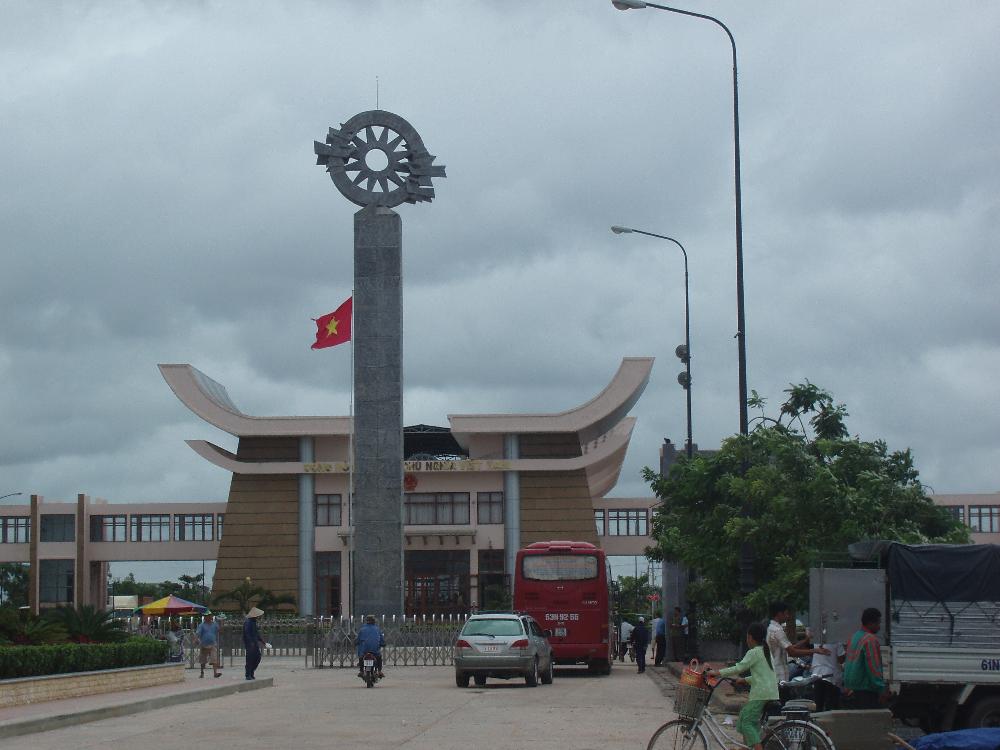
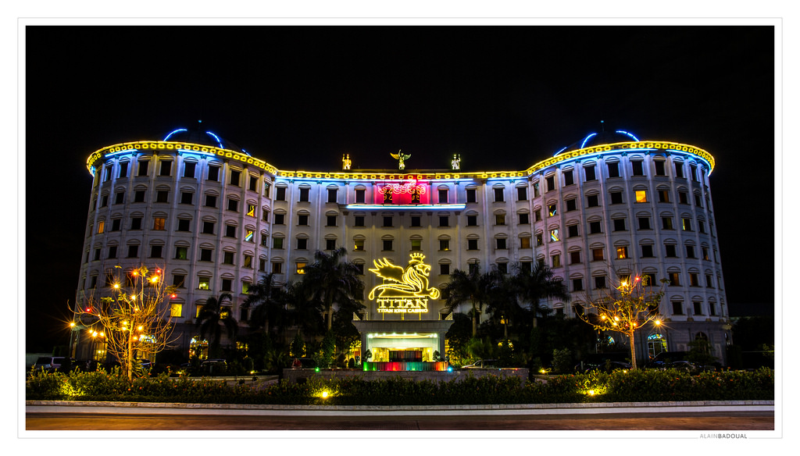

ខេត្ដស្វាយរៀង ឋិតនៅភាគអាគ្នេយ៍នៃប្រទេសកម្ពុជា ជាប់ព្រំប្រទល់ដែនវៀតណាម ដែលមានច្រកព្រំដែនអន្ដរជាតិមួយល្បីឈ្មោះគឺច្រកព្រំដែនបាវិត ឋិតនៅចម្ងាយប្រមាណ៤៨គីឡូម៉ែត្រពីទីរួមខេត្ដស្វាយរៀង។ ធ្វើដំណើរតាមផ្លូវជាតិលេខ១ចម្ងាយប្រមាណ១២២គីឡូម៉ែត្រពីទីក្រុងភ្នំពេញ ។ បាវិតជាច្រកដ៏សំខាន់សម្រាប់ចរាចរផ្លូវគោក ទំនាក់ទំនងរវាងប្រទេសទាំងពីរគឺកម្ពុជានិងវៀតណាម ជាពិសេសគឺទីក្រុងភ្នំពេញ និងទីក្រុងហូជីមិញ។ ក្រៅពីការបង្កើតជាតំបន់កំសាន្ដហើយ តំបន់នេះនៅមានផ្សារណាត់ដែលមានទំនិញគ្រប់ប្រភេទជាផលិតផលក្នុងស្រុក និងផលិតផលពីប្រទេសវៀតណាម។ ច្រកព្រំដែនបាវិតគឺជាមជ្ឈមណ្ឌលទេសចរ ដែលទាក់ទាញភ្ញៀវទេសចរបានច្រើនជាងគេក្នុងចំណោមតំបន់កំសាន្ដក្នុងខេត្ដនេះ។
ខេត្តស្វាយរៀងមានតំបន់ទេសចរណ៍វប្បធម៌ តំបន់ទេសចរណ៍ធម្មជាតិ និង តំបន់ទេសចរណ៍កែច្នៃ មួយចំនួនដែលអាចទាក់ទាញភ្ញៀវក្នុងស្រុក ភ្ញៀវមកពីខេត្តក្រុងផ្សេងៗ និង ភ្ញៀវទេសចរណ៍បរទេស ។ ខាងក្រោមនេះគឺជាតំបន់ទេសចរណ៍ ដែលទេសចរជាតិ និង អន្តរជាតិអាចមកទស្សនាកំសាន្ត ៖
ស្ថិតនៅចម្ងាយ 48 គីឡូម៉ែត្រពីទីរួមខេត្តស្វាយរៀងគឺជាព្រំដែនអន្ដរជាតិជាមួយវៀតណាម។ ច្រកទ្វារបាវិតគឺជាច្រកឆ្លងកាត់អន្តរជាតិដ៏សំខាន់សម្រាប់មនុស្សដែលធ្វើដំណើររវាងទីក្រុងភ្នំពេញនិងទីក្រុងហូជីមិញ។ កន្លែងទាក់ទាញសំខាន់ៗរបស់បេវ៉ាទិគឺកាស៊ីណូពីរដែលស្ថិតនៅចម្ងាយខ្លីនៃព្រំដែន។ កាស៊ីណូទាំងនេះមានប្រជាប្រិយភាពខ្លាំងណាស់ជាមួយនឹងជនបរទេសឆ្លងកាត់ព្រំដែន។ ក៏មានទីផ្សារមួយដែរគឺផ្សារតាថ្មដែលទំនិញត្រូវបានផ្ទេររវាងកម្ពុជានិងវៀតណាម។